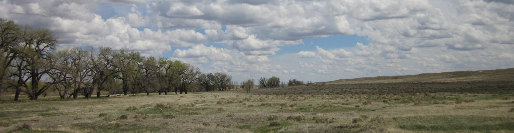

CPER
Cross-project program — concurrent collections at CPER and SGRC, 2022–2023
Date envelope
—
Samples
—
Sub-projects
—
DNA extracted
—
Sequenced
—
Concurrent Sub-Projects
Each bar is one sub-project's date span. Click to drill into that project.
Daily Activity — Stacked by Sample Type
One bar per collection day; stacked segments show how many Air / Plant / Soil / Liquid samples were taken that day. Reveals campaign waves and which days mixed sample types.
Collection Cadence — Calendar Heatmap
Each cell is a calendar day; intensity scales with sample count. Empty cells show rest periods between campaigns.
Sampler Usage — Monthly Stack
Monthly bins show which samplers (SASS, Polycarbonate, plant species samplers, VIVAS, etc.) were active when. Useful to see the design progression across the program.
AM / PM Diurnal Pattern
For days with time-of-day metadata: paired AM (warm) and PM (cool) cells, intensity by count. Shows the diurnal sampling design.
Collection Matrix — Medium × Sampler
Sample count at each medium / sampler intersection. Tower position (Top / Bottom / Nearby) is split out for Air samples.
Freezer Inventory
Filter samples remaining for re-analysis (from Filter Remaining column).
Available
—
Depleted
—
Unrecorded
—
Distribution by remaining-fraction
Tower Position & Sites
Vertical position of air samplers and contributing field sites.
Position
Field site
Sub-Projects in this Group
Click any row to open the per-project page.
Sample Types
Proportion of samples by material type for this project.
Processing Pipeline
Sample counts at each pipeline stage for this project.
Sampling Activity
Monthly sample collection volume for this project.
Replicate Tags
Sampler Type
Sub-Location Breakdown
Sample count by sub-site within this location.
Sample Types
Proportion of samples by material type at this location.
Sampling Activity
Monthly sample collection volume at this location.
Time-of-Day Distribution
Sample collection frequency by time period.
Replicate Tags
Sampler Type
Sample Types
Proportion of samples by material type for this lab group.
Processing Pipeline
Sample counts at each pipeline stage for this lab group.
Sampling Activity
Monthly sample collection volume for this lab group.
Replicate Tags
Sampler Type
Overview
High-level summary of field collection activity across all BROADN sites. KPIs reflect total field samples in the database.
Field Samples
—
Unique Sites
—
Active Since
—
Sequenced
—
Sampling Activity Over Time
Monthly field sample collection volume across all sites, 2020–2025.
Geography
Spatial distribution of collection sites across the United States. Marker size is proportional to sample count at each sub-site.
Collection Sites
Samples by Site
Top sites by total field sample count, sorted descending.
Sample Breakdown
Composition of the sample collection by material type, and the current state of the processing pipeline from collection through sequencing.
Sample Type Distribution
Proportion of field samples by material type.
Processing Pipeline
Cumulative counts at each stage: Collected → DNA Extracted → Sequenced.
Each stage is a subset of the one before it. A sample not advancing to a later stage does not mean it was set aside — many are still being processed, and some did not yield usable data at a given step (for example, low-biomass samples that passed DNA extraction but did not produce enough material to sequence). These counts reflect progress to date, not final outcomes.
Sampler Replicate Tags (All)
Sampler Type Distribution (All)
Data Management
Archival, sequencing, and public deposition status for BROADN field samples, plus sampling duration and site context.
Archived & Cataloged
—
Amplicon Sequenced (16S/ITS)
—
Metagenomes
—
0 of — metagenomes deposited
Deposited in public data repositories
—
—
CPER — Shortgrass Steppe
—
—
SGRC — Southern Great Plains
—
—
NWT — Niwot Ridge
—
—
Hosted via GitHub Pages (free hosting, permanent host TBD)
Data Explorer
Browse recent field samples. Filter by sample category, collection site, or year of collection.
| Request |
|---|